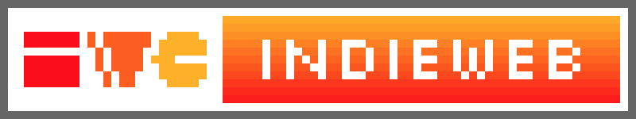

|  |
The IndieWeb movement focuses on the decommercialisation and deindustrialisation of the internet, instead laying focus on personal websites, each with their own flairs, personalities, in order to better reflect the diversity of human people. |

|
See these fun small images/gifs? These are called blinkies/buttons. You can create your own based on the templates here. |
|
If you know me, you know I'm a big fan of old things. There is a movement which aims to restore the internet to its "golden days" (the days of Web 1.0), which were the late 90s to the early 00s. One of the groups in this movement is yesterweb. I love their work. |
|

|
A hand-curated collection of yesterweb homepages. |
|
|
This is where you can find some of the best and most diverse personal websites. |

|
Useful stuff and links for webmasters who want to build a website for themselves too. (Have fun, go wild!!! :D) |

|
Really smart alternative to Google with many more options, usable results, and even an option to look for small websites. |
This website was made listening to one of the following mixes: